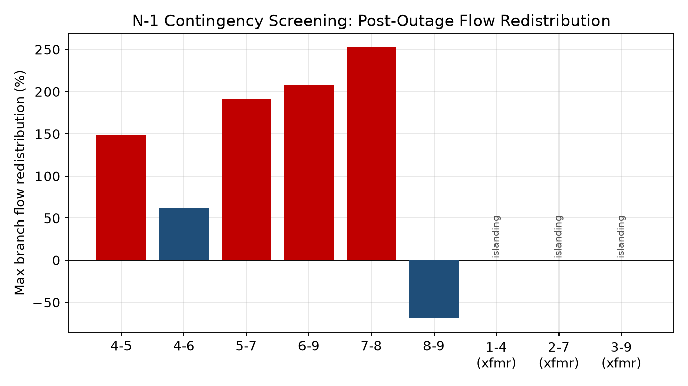
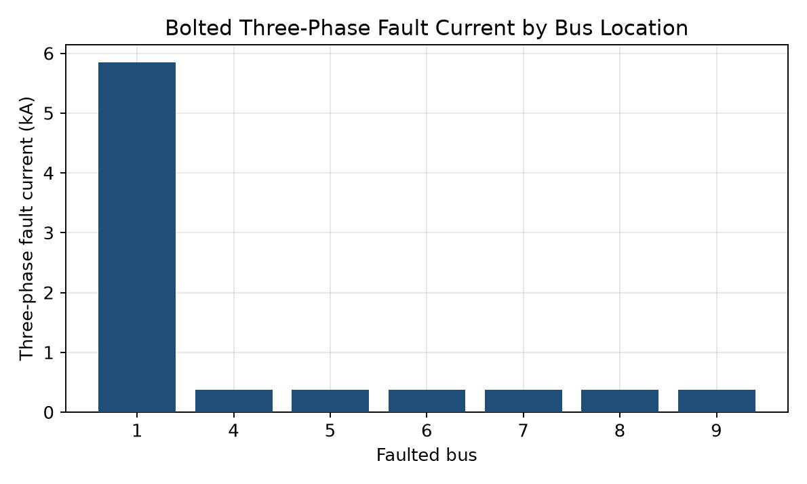

A dependency-light solver, cross-checked two ways
This report documents a custom, first-principles Newton-Raphson AC power flow solver, implemented in Python without commercial or third-party power system libraries, used to evaluate the steady-state performance, contingency security, and voltage stability of the WSCC 9-bus benchmark transmission network.
The primary validation method is a direct cross-check against pandapower: a dedicated script builds the identical network in pandapower and runs its own AC power flow solver for comparison. As a secondary, independently coded check, a Gauss-Seidel power flow implementation was run against the same network model, agreeing with the Newton-Raphson solution to within 0%–2% voltage magnitude across all buses.
Four analyses were carried out on the validated model:
- N-1 contingency screening across all six transmission lines and three generator step-up (GSU) transformers: finding that losing any GSU transformer isolates its generator entirely, while line outages redistribute flow onto parallel corridors by roughly 62%–253%.
- Meshed vs. radial reconfiguration: confirming that forcing radial operation increases system losses from a base case 4.64 MW up to 13.21 MW.
- Progressive loading scan: showing voltage drops of 5–10% at heavily loaded buses once demand reaches roughly 1.55×–1.9× nominal, with the solver failing to converge beyond about 2.2× nominal load.
- Transformer thermal loading: showing the most heavily loaded GSU unit exceeding its nameplate rating at roughly 1.55× nominal demand, ahead of the network-wide voltage limit.
A supplementary three-phase symmetrical fault study, performed with the bus impedance (Zbus) method, characterised fault current magnitudes at representative buses for protection coordination context. Newton-Raphson convergence was consistently fast (4–8 iterations), owing to the small, well-conditioned nature of the benchmark. Overall, the study shows the custom solver reproduces standard power system behaviour with high numerical fidelity and provides an auditable, dependency-light platform for contingency and voltage-stability screening.
Objectives & scope
Modern transmission networks must remain secure not only under normal conditions but also following the unplanned loss of individual elements, the N-1 security criterion. Verifying this requires repeatedly solving the AC power flow equations under a range of network topologies and loading conditions. As demand grows, or as generation and transmission assets are lost, networks can also approach voltage instability, where bus voltages degrade sharply for comparatively small further increases in load.
This project implements the full analytical workflow needed to study these phenomena: a from-scratch Newton-Raphson AC power flow solver, an independent cross-validation solver, an automated N-1 contingency screening routine, a meshed-versus-radial reconfiguration comparison, a progressive loading voltage stability scan, a transformer thermal loading check, and a three-phase fault current calculation.
Objectives
- Implement a Newton-Raphson AC power flow solver from first principles (Ybus construction, polar-form mismatch equations, analytical Jacobian) for slack, PV, and PQ buses.
- Validate solver accuracy primarily against pandapower, with an independently coded Gauss-Seidel solver as a secondary cross-check.
- Screen the network for N-1 contingency security, quantifying post-outage flow redistribution and identifying resulting radial (demeshed) configurations.
- Characterise voltage stability behaviour by scanning demand upward from nominal, tracking voltage decline at the most heavily loaded buses and GSU transformer thermal loading.
- Extend the steady-state solver to a basic fault response capability (three-phase symmetrical fault analysis).
Scope & test network
All analyses are performed on the WSCC 9-bus system (the Anderson & Fouad benchmark), consisting of three generating units (one slack, two PV), three load buses, three junction buses, three GSU transformers, and six 230 kV lines arranged in a single meshed ring. It was chosen because its topology and data are publicly documented and reproducible, keeping the study fully self-contained and auditable.

Network data, formulation & validation strategy
Test network data
The WSCC 9-bus system comprises 9 buses on a 100 MVA system base. Bus 1 (16.5 kV) is the slack bus; Buses 2 (18.0 kV) and 3 (13.8 kV) are PV buses; Buses 4–9 (230 kV) are junction and load buses. Three GSU transformers connect Buses 1, 2, and 3 to the 230 kV network at Buses 4, 7, and 9 respectively. Six 230 kV lines form a single meshed ring: 4–5, 4–6, 5–7, 6–9, 7–8, and 8–9.
| Bus | Type | Base kV | Generation (MW) | Load (MW / MVAr) |
|---|---|---|---|---|
| 1 | Slack | 16.5 | solved by study | - |
| 2 | PV | 18.0 | 163.0 | - |
| 3 | PV | 13.8 | 85.0 | - |
| 4 | PQ (junction) | 230 | - | - |
| 5 | PQ (load) | 230 | - | 125.0 / 50.0 |
| 6 | PQ (load) | 230 | - | 90.0 / 30.0 |
| 7 | PQ (junction) | 230 | - | - |
| 8 | PQ (load) | 230 | - | 100.0 / 35.0 |
| 9 | PQ (junction) | 230 | - | - |
| Branch | Type | R (pu) | X (pu) | B (pu) | Rating (MVA) |
|---|---|---|---|---|---|
| 1–4 | Transformer | 0.0000 | 0.0576 | - | 250 |
| 2–7 | Transformer | 0.0000 | 0.0625 | - | 200 |
| 3–9 | Transformer | 0.0000 | 0.0586 | - | 100 |
| 4–5 | Line | 0.0100 | 0.0850 | 0.176 | 250 |
| 4–6 | Line | 0.0170 | 0.0920 | 0.158 | 200 |
| 5–7 | Line | 0.0320 | 0.1610 | 0.306 | 150 |
| 6–9 | Line | 0.0390 | 0.1700 | 0.358 | 150 |
| 7–8 | Line | 0.0085 | 0.0720 | 0.149 | 250 |
| 8–9 | Line | 0.0119 | 0.1008 | 0.209 | 250 |
Newton-Raphson AC power-flow formulation
For each bus i, injected active and reactive power are expressed in polar coordinates as functions of all bus voltage magnitudes V, angles θ, and the network admittance matrix Ybus = G + jB. The slack bus fixes V and θ as the angle reference; PV buses specify P and V (Q floats); PQ buses specify both P and Q (V floats). The mismatch vector ΔF is driven to zero by Newton's method:
The Jacobian J is assembled analytically in its standard four-block form (∂P/∂θ, ∂P/∂V, ∂Q/∂θ, ∂Q/∂V) and re-evaluated every iteration. Ybus is built from branch R, X, and shunt charging B using the standard π-model stamping procedure, with GSU transformers modelled as series reactances. The solver iterates until the largest absolute mismatch falls below a tolerance (1×10−6–1×10−9 pu depending on the study) or a maximum iteration count is reached.
Two initial guess conventions are used and compared: a "generator-informed" flat start (V = 1.0 pu, θ = 0 at PQ buses, PV/slack initialised at scheduled setpoints), and a fully flat start (V = 1.0 pu, θ = 0 everywhere, including generators).
Validation strategy
The primary validation method is a direct comparison against pandapower. A dedicated script, src/pandapower_validation.py, builds the identical WSCC 9-bus network in pandapower's data model and calls pandapower.runpp to obtain an independent solution for direct comparison against the custom solver's bus voltages and angles.
As a secondary cross-check, a Gauss-Seidel solver was independently implemented from a completely different iterative formulation (fixed-point bus voltage updates rather than Newton linearisation) and run against the identical Ybus/injection model. Because Gauss-Seidel solves the same nonlinear equations by an unrelated numerical route, close agreement between it and the Newton-Raphson solution is meaningful evidence that both the network model and the Newton-Raphson implementation are correct.
The meshed-vs-radial comparison opens each of the six ring lines in turn and compares total real-power losses and bus voltage spread against the closed-ring base case. The loading scan scales all three load buses together from 1.00× to 2.20× nominal in 0.05× steps, holding generation dispatch fixed, and re-solves at each step, continuing until the solver fails to converge (used as a practical, non-continuation-method indicator of maximum loadability). At every step, GSU transformer apparent power is also expressed as a percentage of nameplate rating. The fault analysis applies a bolted three-phase fault at bus k using the bus impedance matrix Zbus = Ybus−1 and the pre-fault voltage profile.
Base case, contingencies, stability & faults
4.1Base case power flow
With generator buses initialised at their scheduled voltage setpoints (the standard flat start), the Newton-Raphson solver converged in 4 iterations to a maximum mismatch tolerance of 1×10−6 pu. With a fully flat start, convergence took 5 iterations, both reflecting the well-known quadratic convergence property of Newton-Raphson on a small, well-conditioned network.
| Bus | Type | Voltage (pu) | Angle |
|---|---|---|---|
| 1 | slack | 1.0400 | 0.000° |
| 2 | PV | 1.0250 | 9.280° |
| 3 | PV | 1.0250 | 4.665° |
| 4 | PQ | 1.0258 | -2.217° |
| 5 | PQ | 0.9956 | -3.989° |
| 6 | PQ | 1.0127 | -3.687° |
| 7 | PQ | 1.0258 | 3.720° |
| 8 | PQ | 1.0159 | 0.728° |
| 9 | PQ | 1.0324 | 1.967° |


| Branch | Loading (MVA) | Rating (MVA) | % of Rating | Losses (MW) |
|---|---|---|---|---|
| 4–5 | 56.1 | 250 | 22% | 0.258 |
| 4–6 | 34.7 | 200 | 17% | 0.166 |
| 5–7 | 87.0 | 150 | 58% | 2.300 |
| 6–9 | 63.5 | 150 | 42% | 1.354 |
| 7–8 | 76.7 | 250 | 31% | 0.475 |
| 8–9 | 34.2 | 250 | 14% | 0.088 |
| 1–4 (xfmr) | 76.6 | 250 | 31% | 0.000 |
| 2–7 (xfmr) | 163.3 | 200 | 82% | 0.000 |
| 3–9 (xfmr) | 86.3 | 100 | 86% | 0.000 |
4.2Validation
The independently coded Gauss-Seidel solver converged in 43 iterations (tolerance 1×10−8 pu). Across all nine buses, the maximum deviation between the Newton-Raphson, pandapower, and Gauss-Seidel voltage magnitude solutions was 3.00×10−6%, several orders of magnitude inside the 2% threshold, confirming the Ybus model and Newton-Raphson implementation are correct.
4.3N-1 contingency screening
All six line contingencies converged. The mildest, loss of line 4–6, redistributes the worst-affected surviving branch's flow by 61.5%; the most severe, loss of line 7–8, redistributes flow by 253.3% and pushes line 5–7 to 155.0 MVA against its 150 MVA rating (103% of rating), the only thermal violation found in the base-case N-1 screen. Loss of line 4–5 also drives Bus 5 to 0.839 pu, a voltage violation of the ±5% band.
All three GSU transformer contingencies resulted in immediate islanding: each generator has only one radial connection into the 230 kV mesh, so losing its step-up transformer disconnects the unit entirely rather than producing a converged but stressed power flow case.

| Outage | Outcome | Iters | Max Flow Redist. | Min Bus V (pu) | Thermal Violation |
|---|---|---|---|---|---|
| 4-5 | Converged | 5 | +149.2% | 0.8388 | None |
| 4-6 | Converged | 4 | +61.5% | 0.9418 | None |
| 5-7 | Converged | 5 | +191.2% | 0.9380 | None |
| 6-9 | Converged | 4 | +207.5% | 0.9639 | None |
| 7-8 | Converged | 4 | +253.3% | 0.9690 | Branch 5-7: 155/150 MVA |
| 8-9 | Converged | 4 | -69.1% | 0.9783 | None |
| 1-4 (xfmr) | Islanding - Bus 1 isolated | - | - | - | None |
| 2-7 (xfmr) | Islanding - Bus 2 isolated | - | - | - | None |
| 3-9 (xfmr) | Islanding - Bus 3 isolated | - | - | - | None |
4.4Meshed (ring) vs. radial configuration
The closed-ring base case sustains total transmission losses of 4.64 MW. Forcing radial operation by opening any one of the six ring lines increases losses in every case, from a modest +0.71 MW (opening 8–9) up to +8.57 MW (opening 5–7), a loss penalty of up to roughly 185% relative to meshed operation. Radial configurations also show a wider bus voltage spread, confirming that ring/meshed operation improves both loss performance and voltage profile relative to radial feeding, at the cost of the additional protection coordination a meshed topology requires.

| Configuration | Losses (MW) | Δ vs. Meshed (MW) | V Spread (pu) | Min Bus V (pu) |
|---|---|---|---|---|
| Meshed (base case) | 4.64 | +0.00 | 0.0444 | 0.9956 |
| Radial (open 4-5) | 9.57 | +4.93 | 0.2012 | 0.8388 |
| Radial (open 4-6) | 6.14 | +1.49 | 0.0982 | 0.9418 |
| Radial (open 5-7) | 13.21 | +8.57 | 0.1020 | 0.9380 |
| Radial (open 6-9) | 9.49 | +4.85 | 0.0761 | 0.9639 |
| Radial (open 7-8) | 12.09 | +7.45 | 0.0710 | 0.9690 |
| Radial (open 8-9) | 5.35 | +0.71 | 0.0617 | 0.9783 |
4.5Voltage stability & increased demand loading scan
As system demand is scaled uniformly upward, voltage at the three load buses declines monotonically. Bus 5, the electrically weakest, furthest from the nearest generator along the highest-impedance corridor, first crosses a 5% drop at 1.55× nominal load and a 10% drop at 1.9× nominal load. Buses 6 and 8 follow the same trend but decline more gently, reflecting their stronger electrical connection to the nearest generator.
The power flow continued to converge up to 2.2× nominal demand; beyond that point (tested up to 2.30×) the solver failed to converge for every initial guess attempted, consistent with the network approaching its maximum loadability (voltage collapse) boundary in this region.

4.6Transformer thermal loading
At the base case, GSU transformer T1 (Gen 1, 250 MVA) carries only 30.6% of rating, while T2 (200 MVA) and T3 (100 MVA) are already comparatively heavily loaded at 81.6% and 86.3% respectively. As demand grows, T1's loading rises fastest, crossing 100% of its rating at approximately 1.55× nominal demand, noticeably before the network-wide voltage stability limits become binding. T3 also approaches its rating (100.1% at 1.90×) later in the scan, while T2 remains below 95% throughout the tested range. This identifies T1 thermal loading as the first equipment-level constraint the system encounters under sustained load growth, ahead of the voltage stability boundary itself.

4.7Three-phase symmetrical fault analysis
A bolted three-phase fault was applied in turn at Bus 1 and at each of Buses 4, 5, 6, 7, 8, and 9. At every faulted bus the local voltage collapses to zero, as expected, while remaining buses retain a partial voltage depending on their electrical distance from the fault. The fault at Bus 1 produces the highest per-unit fault current (1.670 pu) due to the generator's low internal (transformer) impedance, while faults on the 230 kV network produce broadly similar per-unit currents (1.46–1.51 pu), reflecting the relatively uniform impedance of the meshed ring as seen from any one of its buses.

What the results mean operationally
5.1Convergence behaviour
The project scope originally targeted stable convergence within 10–12 Newton-Raphson iterations. In practice, the WSCC 9-bus benchmark converged in 4 iterations from a generator-informed start and 5 from a fully flat start, rising only to 6–8 iterations even under combined heavy loading and contingency stress, before the solver stopped converging altogether beyond the network's loadability limit. This isn't a solver shortfall, quadratic convergence on a compact, strongly meshed 9-bus system is expected to be fast, but the 10–12 iteration figure is more characteristic of larger transmission networks, more weakly conditioned systems, or industrial-scale EMS runs solved without a warm start.
5.2Contingency security implications
The N-1 screening results split cleanly into two risk categories. Line contingencies stress the network by redistributing flow within the surviving mesh, severely in some cases, but the network continues to operate, converging to a valid (if more stressed) solution every time. Transformer contingencies are categorically different: because each generator has only a single radial GSU transformer into the mesh, losing it removes the generator entirely rather than stressing the network. Line contingencies are network security events requiring flow and voltage limit checks; GSU transformer contingencies are generation adequacy events requiring reserve/redispatch planning, and the islanding detection automatically flags which category each contingency falls into.
5.3Voltage stability & equipment margins
Sections 4.5 and 4.6 together show that demand-growth headroom is bounded by two different mechanisms that bind at different points: transformer T1 reaches its thermal rating at roughly 1.55× nominal demand, well before bus voltage limits become binding, and well before the network approaches voltage collapse near 2.2×. In this network, equipment thermal limits, not voltage stability, are the first constraint encountered under sustained, uniform load growth. Voltage stability analysis alone would understate the actual growth headroom if performed without also checking equipment thermal ratings.
Meshed operation as a loss & voltage stability resource
The meshed-vs-radial comparison reinforces the contingency results: every radial configuration increases both losses and voltage spread relative to the closed-ring base case, by amounts that vary widely with which line is opened (+0.71 MW to +8.57 MW). The same physical event, a line outage, has a materially different impact depending on which corridor is affected, which is precisely why blanket N-1 rules of thumb are insufficient and case-by-case contingency screening remains necessary even on a network this small.
Where the results should be read carefully
PV bus generators can supply any reactive power required to hold their voltage setpoint. Real generators have finite Qmin/Qmax limits; enforcing them would further tighten the voltage stability margin.
All results are specific to the 9-bus WSCC benchmark. Its single-ring topology and 1:1 generator-to-transformer arrangement directly shape the N-1 islanding finding and redistribution percentages.
The classical WSCC 9-bus dataset doesn't specify thermal ratings; assigned ratings are reasonable estimates, not sourced from a utility design document.
The maximum loadability point is inferred from where Newton-Raphson stops converging, a practical but approximate proxy for the true saddle-node (voltage collapse) point, not a full continuation power flow.
Unbalanced faults (SLG, LL, DLG) require negative- and zero-sequence network models, not built for this study; results shouldn't be used for protection relay coordination.
Steady-state operating points only, no transient stability, dynamic voltage recovery, or time-domain protection/switching sequences.
Where this could go next
- Add PV bus reactive power limit enforcement (automatic PV → PQ switching at Qmax/Qmin), a standard feature of production-grade power flow solvers.
- Extend to a larger IEEE benchmark (30, 57, or 118 bus) to test iteration-count behaviour on a more weakly conditioned system and obtain results on a more realistically meshed topology.
- Implement a continuation power flow (predictor-corrector) method to trace the complete P-V and Q-V nose curves for a rigorous maximum loadability margin.
- Extend fault analysis to negative- and zero-sequence networks to support single-line-to-ground and line-to-line fault calculations.
- Source or design actual thermal ratings for branches and transformers if this workflow is applied to a real utility network.
- Add time-domain transient stability simulation (swing equation integration following a fault).
A complete, auditable power flow toolchain
This project delivered a complete power flow analysis toolchain: a Newton-Raphson AC solver, a primary pandapower validation script, a secondary independently coded Gauss-Seidel cross-check, N-1 contingency screening, meshed-versus-radial reconfiguration comparison, a voltage stability loading scan, transformer thermal loading checks, and a three-phase fault current calculation, applied to the WSCC 9-bus transmission benchmark.
The solver converged reliably across all tested operating conditions up to the network's maximum loadability boundary, with the pandapower check showing agreement to within 3.00×10−6%. The analyses produced several concrete, physically consistent engineering findings: N-1 line contingencies redistribute flow onto surviving corridors by tens to hundreds of percent depending on severity, while the network's three GSU transformers have no contingency redundancy and instead island their generators when lost; meshed operation reduces both losses and voltage spread relative to any radial configuration; heavily loaded buses see voltage drops in the operationally significant 5–10% range once demand grows to roughly 1.55×–1.9× nominal; and, on this network, a transformer thermal limit is reached before the voltage stability boundary itself becomes binding.
Taken together, the results demonstrate a sound, auditable, and extensible power system analysis capability built without dependence on external power flow libraries for its core solver, with a third-party pandapower cross-check confirming its functionality.
Software structure
The analysis toolchain is implemented in Python 3 (numpy, scipy, matplotlib):
- data/network_9bus.py: WSCC 9-bus network dataset (buses, generators, loads, lines, transformers).
- src/ybus.py: Admittance-matrix (Ybus) builder from branch data, with optional branch outage exclusion for contingency studies.
- src/newton_raphson.py: Newton-Raphson AC power flow solver (polar form, analytical Jacobian) and branch power flow post-processing.
- src/pandapower_validation.py: builds the identical network in pandapower and runs pandapower's own AC power flow solver for comparison.
- src/gauss_seidel.py: independently coded Gauss-Seidel AC power flow solver, the project's secondary cross-check.
- src/network_setup.py: assembles solver-ready Ybus/injection arrays from the raw network dataset, with load scaling and outage index options.
- src/contingency.py: automated N-1 contingency screening across all branches, including islanding detection and thermal/voltage violation checks.
- src/fault_analysis.py: three-phase symmetrical fault analysis via the bus impedance (Zbus) method.
- src/main.py: orchestrates all analyses, saves results to
results/results.json, and generates figures.
All numerical results and figures in this report were generated directly by this codebase; no numbers were entered by hand. The complete source code and results.json data file accompany this report.

src/main.py on a full run of the toolchain.